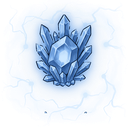
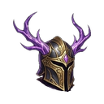
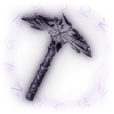
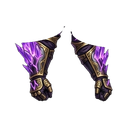
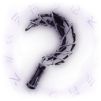
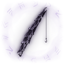
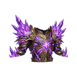
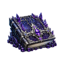

Kutsal Tapınak
Av bölgesiT9Sv 41-45
Yaratıklar
Bir yaratığı yenince gelen EXP ve altın. Aldığın EXP ayrıca seviyene ve bonuslarına bağlıdır; oyundaki yaratık kartı senin miktarını gösterir.
| Yaratık | Seviye | Taban EXP | Altın | Düşenler |
|---|---|---|---|---|
| Kutsal Nöbetçi | Sv 41 | 83.844 | 3.292 |  Yükseltme Taşı T8 Obsidyen Miğfer T9 Obsidyen Kazma T9 |
| Melek Okçu | Sv 42 | 117.750 | 4.623 | Yükseltme Taşı T8  Obsidyen Eldiven T9 Obsidyen Orak T9 |
| Işık Golemi | Sv 43 | 162.572 | 6.383 | Yükseltme Taşı T8  Obsidyen Çizme T9 Obsidyen Çizme T9  Obsidyen Olta T9 |
| Serafim Muhafızı | Sv 44 | 221.485 | 8.696 | Yükseltme Taşı T8  Obsidyen Göğüslük T9 |
| Arkon Lordu | Sv 45 | 335.772 | 13.183 | Yükseltme Taşı T8  Obsidyen Pantolon T9 Obsidyen Pantolon T9  Obsidyen Sadağı T9 Obsidyen Sadağı T9  Obsidyen Kalkan T9 Obsidyen Kalkan T9  Obsidyen Kitabı T9 Obsidyen Asa T9 Obsidyen Asa T9  Obsidyen Kılıç T9 Obsidyen Kılıç T9  Obsidyen Topuz T9 Obsidyen Topuz T9  Obsidyen Yay T9 Obsidyen Yay T9 |
Toplama
Toplama, karakter EXP'si yerine meslek EXP'si verir.